1939 – 1945
The Battles
Every battle in Panzerkeil, in the order the war fought them: what really happened, and how to fight it yourself.
34 battles of the Second World War, 48 ways to fight them: some from one side, some from both. Three were never fought at all.
1939
1940
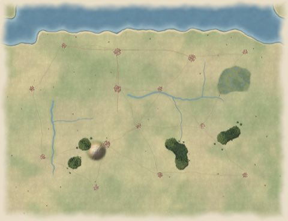
Dunkirk26 May to 4 June 1940Western Allies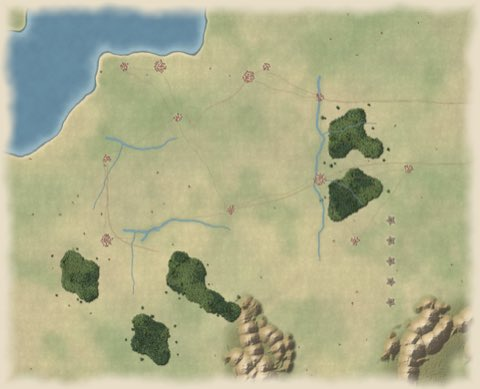
The Battle of France10 May to 25 June 1940Wehrmacht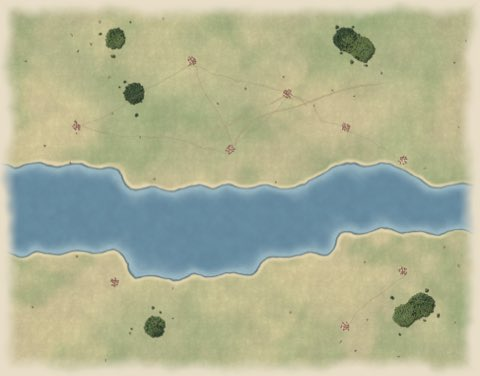
The Battle of BritainJuly to October 1940Wehrmacht
1941
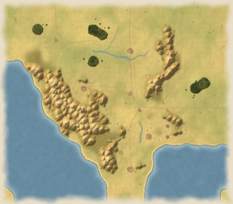
The Balkans Campaign6 to 30 April 1941Wehrmacht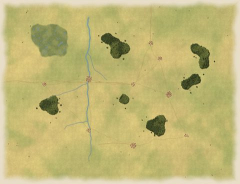
The Battle of Kiev23 August to 26 September 1941Wehrmacht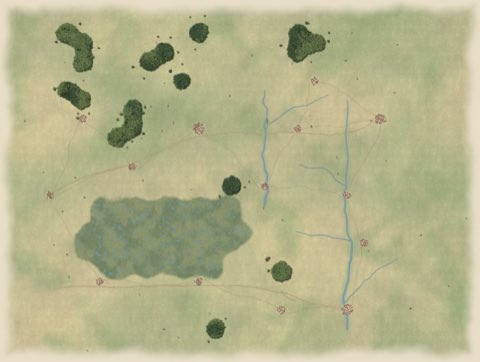
Operation Barbarossa22 June to December 1941WehrmachtRed Army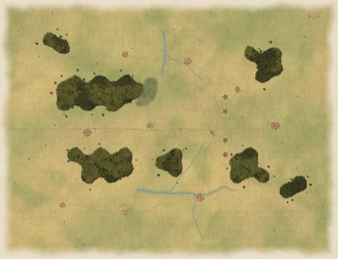
The Battle of Moscow2 October 1941 to 7 January 1942WehrmachtRed Army
1942
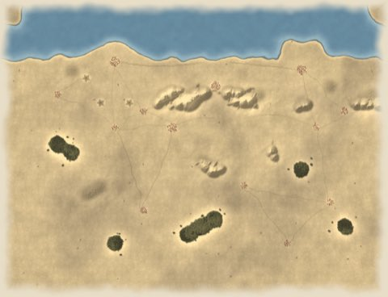
Operation Crusader18 November 1941 to early January 1942Western Allies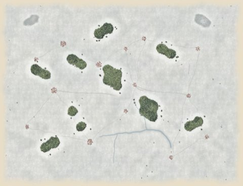
The Moscow Counter-Offensive5 December 1941 to 20 January 1942Red Army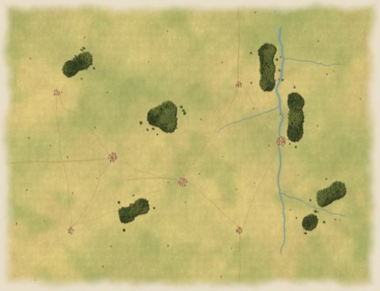
The Second Battle of Kharkov12 to 28 May 1942WehrmachtRed Army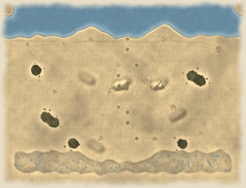
The Battle of Alam Halfa30 August to 5 September 1942Western Allies- The Second Battle of El Alamein23 October to 4 November 1942Western Allies
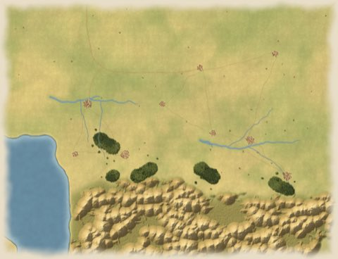
The Battle of the Caucasus25 July 1942 to January 1943Wehrmacht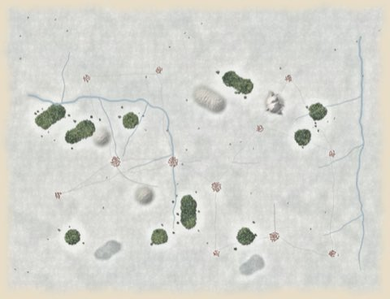
Operation Uranus19 to 23 November 1942Red Army
1943
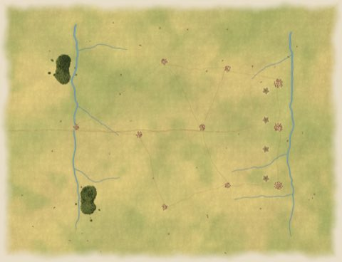
The Battle of Stalingrad23 August 1942 to 2 February 1943WehrmachtRed Army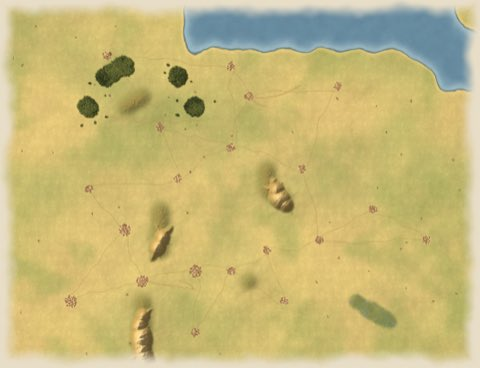
The Battle of Kasserine Pass19 to 25 February 1943Western Allies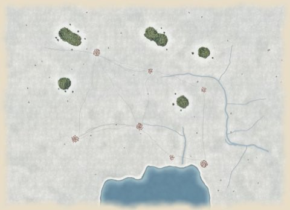
The Third Battle of KharkovFebruary to March 1943Wehrmacht- Operation Little Saturn16 to 30 December 1942, with follow-on offensives to February 1943Red Army
- The Tunisian Campaign22 April to 13 May 1943Western Allies
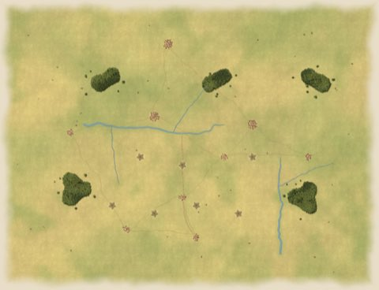
The Battle of Kursk5 to 16 July 1943WehrmachtRed Army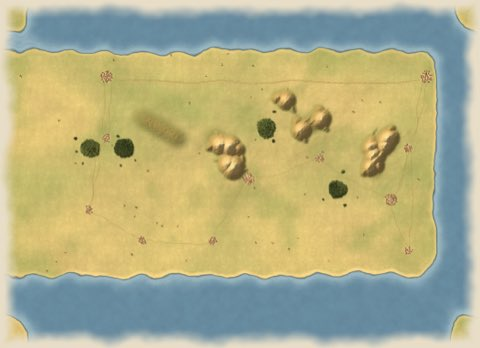
The Invasion of Sicily10 July to 17 August 1943WehrmachtWestern Allies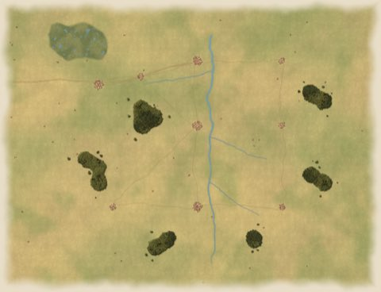
The Battle of the DnieperAugust to December 1943WehrmachtRed Army
1944
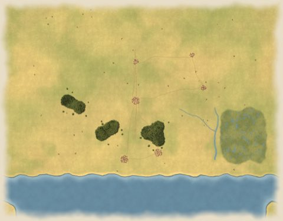
The Battle of Anzio22 January to 4 June 1944WehrmachtWestern Allies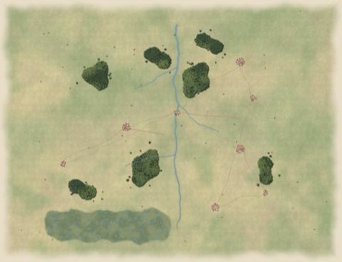
Operation Bagration22 June to 19 August 1944WehrmachtRed Army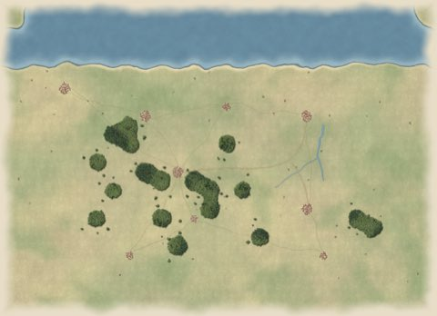
The Battle of Normandy6 June to 25 August 1944WehrmachtWestern Allies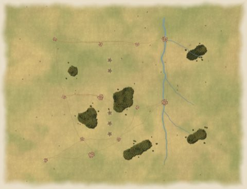
Operation Market Garden17 to 25 September 1944WehrmachtWestern Allies
1945
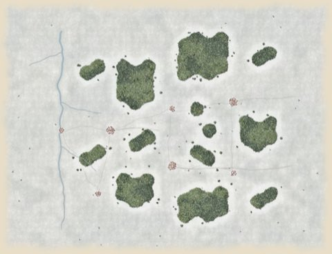
The Battle of the Bulge16 December 1944 to 25 January 1945WehrmachtWestern Allies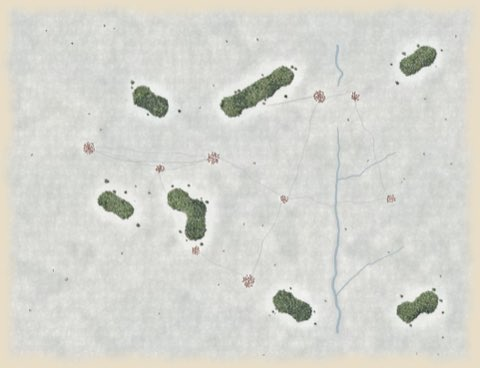
The Vistula–Oder Offensive12 January to 2 February 1945WehrmachtRed Army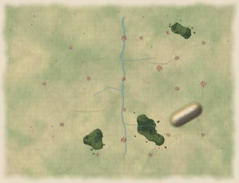
Crossing the Rhine22 March to 18 April 1945Western Allies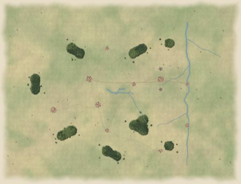
The Battle of Berlin16 April to 2 May 1945WehrmachtRed Army